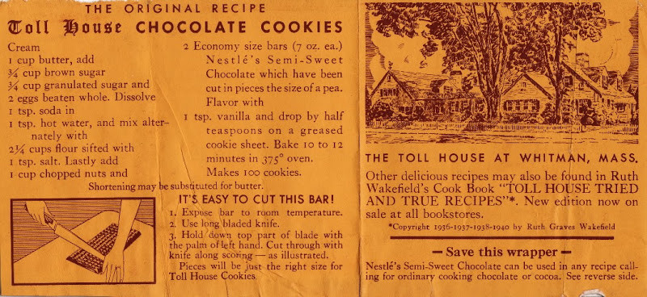

Biografía Ruth Wakefield
Su nombre es Ruth Wakefield; fue entre muchas cosas una dietista, autora, educadora y chef americana mayormente reconocida por ser la creadora de la primera galleta con chispas de chocolate.
Pues esta receta de 83 años de existencia, surgió gracias a Ruth Wakefield; Su origen está lleno de mitos urbanos, desde la accidental caída de una chocolate a la mezcla, hasta el desabastecimiento de lo que era el ingrediente principal de sus galletas, sin embargo, su verdadero origen va ligado a su profesionalismo como repostera, del cual, de la mezcla de una galleta convencional más el chocolate amargo nestle, surge la galleta con chips de chocolate, un clásico que todos disfrutamos.
Una galleta con pepitas de chocolate es una galleta que se originó en los Estados Unidos con pepitas de chocolate como ingrediente distintivo. La receta tradicional combina una masa a base de mantequilla y azúcar moreno o blanco con pepitas de chocolate semi-dulces.